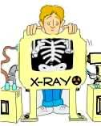
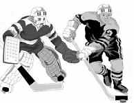
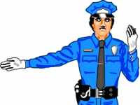

| Ethics Dictionary | Conditions Formulas | PTS Glossary | FAQs |
|
|
| Ethics Dictionary | Conditions Formulas | PTS Glossary | FAQs | |
Note: This chapter is from 'The Road to Clear", Level 2.
What is a Missed Withhold?
Note: This chapter from ST-2 is included to explain the mechanism of Missed Withholds. Only an ST-2 auditor would pull overts, withholds and Missed Withholds as auditing. An Ethics Officer is routinely dealing with people with Withholds and needs to know what he is dealing with. Without being an ST-2 auditor he still has the tool of O/W write-up as described under Ethics Tools.
Missed Withhold, 1. an undisclosed contra-survival act which has been restimulated by another but not disclosed. 2. A missed withhold is a 'should have known'. The pc feels you should have found out about something and you didn't. 3. The missed withhold is something people nearly found out. It's another person's action. It's nothing the pc did or is doing. It is another person's action and the pc's wonder about it. Abbreviation: M/W/H.
 |
She wonders |
A withhold and a missed withhold are two different things. There has to exist a withhold for it to get missed, of course. But the manifestations and the exact thing you need to address are different for the two phenomena. A withhold is something the pc has done and isn't talking about. We covered that earlier and we covered briefly how to audit it. You of course want to know what the pc did. You want time, place, form and event of the pc's action.
When we talk about a missed withhold it is another person's action. It's a withhold that another person nearly found out about but didn't. You need to find what that person almost found out. That is the withhold. But It is not missed until someone else nearly found out about it. The missed withhold has nothing to do with what the pc did or is doing. The 'missed' part is not the pc's action.
It is the other person's action of missing it and the pc then wondering about it. The wondering and the worrying, the uncertainty and the misemotion stemming from this is, what a missed withhold is all about. Since the restimulation, the misemotions and the dramatizations on the part of the pc can be pretty spectacular and pretty dramatic and destructive this is a very important datum.
So a missed withhold has nothing to do with the pc. It is another person's action and the pc's wondering about whether this person knows or not. When you are talking about the 'missed' phenomena, you are talking about the moment of restimulation. It got restimulated by this other person. You can actually forget about, that it even is a withhold. You are looking for exact moments in the lifetime of this pc when somebody else almost found out and he has never been sure since whether they did or they didn't. We don't care what they almost found out. We only care that they almost found out something. That is the essence of how you address and handle a missed withhold.
You address an other-person-than-the-pc's action; the moment of restimulation of something in the pc's Bank.
 |
|
|
Sherlock Holmes, |
The body could be |
The Mystery Sandwich
The pc is stuck in the unknowingness and
the uncertainty as to whether someone else knew. This blows when the pc spots
it. So a missed withhold is an overt and a withhold plus a mystery. The
magnitude of the overt has nothing to do with its evaporation. The degree of mystery
is what holds it in place. If you want to know what is sticking a thetan to
something, look for the mystery sandwich. The mystery sandwich is the thetan's
desire to find out but the character of what he wants to find out about is in
such a confusion so he never will. His desire to know is great but the confusion
and resolution of what he wants to find out about is too complicated. Even
overts themselves wind up in the mystery of whether you should have done it or
not. This causes withholding of further action. All things here can be boiled
down to right conduct and wondering about it.
So when you ask the pc for missed withholds, be
alert to whether the pc is giving you withholds or missed withholds.
The number of withholds a person has on the whole track is undoubtedly
staggering. You don't need to get them all to clear somebody.
 |
|
|
In any Game you |
Offense and Defense are |
Withholds and Games
The whole anatomy of a game is overts and
withholds. You attack the opponent and defend yourself against him. The overt is
a reach and the withhold is a no reach. You gather things or mass for yourself
and try to prevent or keep down to a minimum the loss of mass or particles. It's
like a Bank account, a household, any company or group or single individual. We
are not necessarily talking about breaking rules here. If the amount or mass is
increasing you are winning. So you gather energies by the mechanism of O/W which
results in solid-mass terminals (like a fat Bank account), making a game
possible. You don't have time enough in auditing to run all the pc's overts,
even for one lifetime. General O/W (a process like' "What have you
done?", "What have you withheld?") does have its uses. It could
work for getting the pc into session and smoothing things out, but it is
generally too lengthy except for special uses, like Grade 2, where it is a Major
Action.
So a shortcut of this for rudiment purposes is to
ask the pc for "nearly-found-outs". Those are the moments of
restimulation. When you pick up a pc's missed withholds, you are looking for and
picking up another person's action, not the pc's. And it is best characterized
as 'nearly found out'.... You are running the almost-discovered-track.
Why we are interested in these moments of
'nearly found out's
You'll never see anybody quite so upset
as somebody who has been just barely missed. Look at a person who was not hit by
a car by a hair, or a bear that is biting at a bullet that flew by and just
missed him; or look at an exam that you failed by one or two points. It's the
nearness of the miss that counts. You can even look for examples in violent acts
done in a state of extreme emotional upset. Somebody nearly found out about an
overt or crime and the sinner got so emotionally upset as to assault the
unsuspecting intruder. He wanted no witnesses. This is the wild animal reaction
that makes Man a cousin to the beasts. But this phenomenon is also based on the
element of a mis-estimation of effort or thought in it. A thetan's main
attention and main mental activity is an estimation of thought, effort, and look
(impressions). He wants to know how much look is a look. His certainties are all
based on proper estimation of thought, effort, impressions, etc. When an error
is made here, it is very upsetting to him. How much knowledge is knowingness?
That is an estimation; you can have a good opinion about that. How much emotion
does it take to be emotional? Enough to create the desired effect; that is easy.
What is a proper symbol, etc.? You can estimate everything except how much
mystery it takes to make a mystery, because that is a mystery! You are now into
the no-estimation band, and it is all mysterious. The not-knowingness of it is
confusing and upsetting; but it keeps the thetan working at it, over and over.
A Not-knowingness that is 'probably known' is especially painful, because of the multiple not-know of viewpoints and flows involved. Take a not-knowingness and play with it both ways: They knew, but they didn't or couldn't have known. You know they knew, but you know they didn't know. The four-way flows of a missed withhold are painful to a thetan. This is the stuff of which insanity is made.
Insanity in the effort band of the know to mystery scale is "can't reach/must reach". It's terrible important to get something done, but at the same time impossible; but at the same time, maybe if..., etc., etc. Insanity in the mystery band is a "did/didn't know; must/mustn't know". That is what we are discussing here. That is what a missed withhold is and what it is doing to the pc. It's just pure mystery glue, ... and the thetan will stick right to it.
Just getting the overt and withhold off, when there is an added mystery of a missed withhold, doesn't produce an As-isness of the section of track where the pc is stuck, because the pc is not simply stuck with the overt or the withhold. The pc is stuck with the 'almost found out', so of course nothing As-ises. If you only get the O/Ws off you may end up with a recurring withhold.
Recurring Withhold
A recurring withhold is one which the pc
keeps giving you. The charge keeps coming up because of the restimulation in the
'Nearly found out'. The actual overt, the pc action, may not be entirely known
to the pc either. Yet it is the 'Nearly found out' that keeps being restimulated
by being missed by people. The withhold the pc keeps coming up with hasn't been
completely uncovered. In a case like this it is typically because the pc does
not know either. It can very well include unrecovered pieces of the withhold the
pc is telling you; or it can be an earlier similar withhold that is at the root
of the withhold he is giving. But what really keeps that withhold alive and
recur in auditing is, that it keeps being missed (restimulated) in life or in
the auditing situation. This is a multiple mystery situation. The remedy is to
make absolutely sure to get the full overt (including earlier similars) and get
a full list of "Who missed it?" and "What did he/she do that made
you wonder?" and get that question completely answered.
You could get remarkable results from running, "Get the idea of people nearly finding out about you." You could run this on four flows. This process would free up track that the pc had never seen before, but which had been right in front of his nose.
 |
This armed traffic cop |
So when pulling missed withholds, it is not what the pc did which is of interest. When pulling missed withholds, "get the name, rank and serial number of the person who missed it". We couldn't care less of what was missed. We don't want to focus on the pc's action. We want the pc's guesses about the other guy; pc's desperate attempts to figure out what is going through this guy's mind. Get who the pc thinks might know, etc., etc.
If you have gotten off his overts on something, as on a repetitive process, and he still feels a bit weird about it, you may think that he must have more overts, so you keep after him for more. This will send him around the bend, since you are essentially cleaning a clean. What you really have to find is:
1. Who nearly discovered the overt.
2. When.
4. What action on the other person's part restimulated it.
3. Any other times this happened.
This type of questioning has to be exhausted completely.
This is what is needed, to complete the cycle that was started when the overt was almost discovered. Just as far as time is concerned, it is a mystery sandwich. The thetan is wondering whether a certain consequence or punishment is going to happen or not. "What is going to happen to me? If so, when? Or isn't it going to happen?"
|
In the TV series |
Colombo and M/W/H
If you have ever seen the TV series 'Colombo' (Peter Falk) with the Los Angeles
detective, you will know what we are talking about. Colombo had refined 'the art
of missing withholds' in his suspects. By turning up all the time in a sneaky
manner and ask the suspect nosy questions, he would drive his suspects
completely nuts and they would finally confess just to escape the torture and
insanity of the not-know and mystery confusion. Colombo used this method, when
he didn't really have enough evidence. He would never be able to convict the
suspect without his confession. But he was having the suspect create this
mocked-up track of punishment that never actually was going to appear without a
confession. But these pictures of what Colombo might know and the consequences
of that, would push his suspects over the brink. They would usually have some
kind of nervous break-down before confessing.
So in addressing missed withholds, you first ask, "What have we failed to find out about you?" That to establish the withhold and what you are talking about. But the important thing to ask is, "What have we nearly found out about you and when did we nearly find it out?" The second question gets the missed withhold. The worst type of missed withhold is where the pc is asking himself, "Which one of my crimes did he (maybe) discover?" Here is an extra confusion of many scenarios added that is devastating to the pc's peace of mind.
If anything like this should happen in session you just need to know what you are looking at and get all the missed withholds and all the times they were missed and your pc will cool off, feel great and be very cooperative.
The good news in all this is, that the simple action of pulling missed withholds on the pc seems a magic cure for a lot of auditing situations, that before this datum was known seemed beyond repair.
|
|
|
|
|